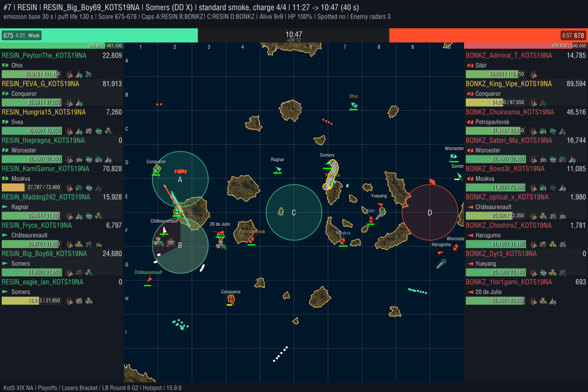
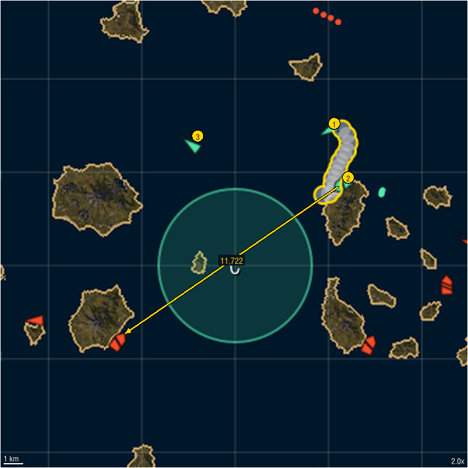

RESIN RESIN_Big_Boy69_KOTS19NA Somers
Hotspot | RESIN vs BONKZ | Playoffs Losers Bracket LB Round 6 | Game 2 | activated 11:27 (8:33 elapsed, mid), captured 10:47 | standard smoke US_Lvl_10_Gold
11,722 smoke damage 0 concealed, 11,722 detected


Clip available on request.
Classification auto-tagged: rule-based from the replay; fuzzy tags carry a confidence; hover a value for the numbers
| Smoker | Destroyer, standard smoke |
| Movement | Kiting |
| Coverage | Stacked |
| Purpose | |
| Location | zone center; center lane; nearest cap C is a center cap on the flank |
| Front line | past the midpoint between the fleets |
| Caps in range | A, B, C, D |
Confidence: high medium low rule-based
Deployment
| Duration | 170 s |
| Allies in smoke at capture | RESIN_KamiSamur_KOTS19NA |
| Selfish smoke | no |
| Hand tags | untagged |
Objectives
| Distance to contested cap | on average 1.8 km from the edge of contested cap C, contested because it sits on the midline between the spawns |
| Cap outcome | smoke near a cap capture: cap B flipped to the team at 10:35 |
| Denial signal | 0.0 enemy ships in or near cap C in the minute before, 0.3 while the smoke stood |
| Score at capture | 675 : 678 (swing +15) |
| Our radar from the smoke | 2 enemies spotted over 1 activation(s) by RESIN_KamiSamur_KOTS19NA (inferred from the activation and radar range) |
| Radar cap coverage | 100% of cap C within RESIN_KamiSamur_KOTS19NA's radar range, the whole cap; radar was activated from the smoke |
Violence
| Smoke damage | 11,722 |
| Concealed vs detected | concealed 0detected 11,722 |
| Detected shooters were spotted by | hydro 11,722 |
| By where the shooter sat | fired from inside 11,722fired from outside, hidden by it 0 |
| By kind | shells 7,921, fires they started 3,801 |
| DD damage | 0 |
| Kills from smoke | 0 |
Shooters credited are in the Smokees table below.
Enemy ships damaged from the smoke
| Ship | Player | Concealed | Detected | Total | Sunk |
|---|---|---|---|---|---|
| Petropavlovsk | BONKZ_Chukwama_KOTS19NA | 0 | 11,722 | 11,722 | no |
The bad news
| Radar spots on us | 1 (10,177 damage taken while spotted): RESIN_KamiSamur_KOTS19NA at 10:35 by BONKZ_Dyr3_KOTS19NA |
| Smoke deaths | 1: RESIN_KamiSamur_KOTS19NA (Moskva) sunk at 08:25, concealed inside the smoke, after it cleared |
Smokees the smoker, every ally the smoke covered (inside it, firing undetected from behind it, or with it in their line of fire) and every credited shooter; numbers match the zoomed view
| Ship | Player | Role | Undetected | Detected by (time) | Damage dealt concealed / detected | Damage taken while covered | Kills | |
|---|---|---|---|---|---|---|---|---|
| 1 | Somers | RESIN_Big_Boy69_KOTS19NA | smoker | 79% | radar 27 s | 0 / 0 | 594 | 0 |
| 2 | Moskva | RESIN_KamiSamur_KOTS19NA | inside | 34% | hydro 53 s, radar 37 s, surface lit 2 s | 0 / 11,722 | 34,721 | 0 |
| 3 | Ragnar | RESIN_Maddog242_KOTS19NA | line of fire | 100% | - | 0 / 0 | 0 | 0 |